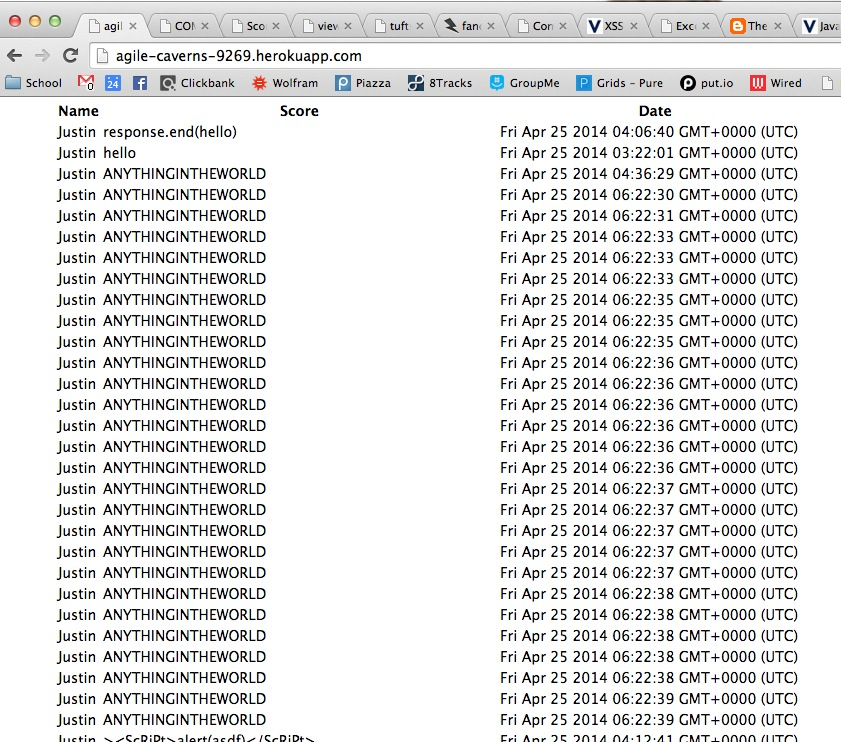
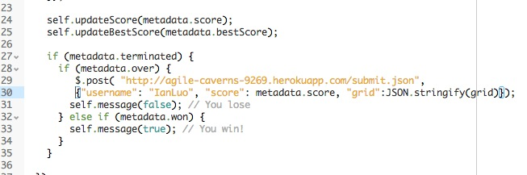
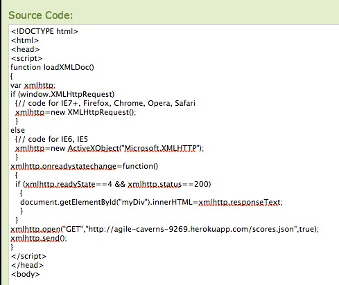

Comp 20 Project 5
By: Ian Luo
Introduction
This website, located here is a gamecenter for the popular 2048 game. The site receives submission of scores from any instance of the game and stores the data in a database along with the username and a timestamp. The purpose of this document is to find various security vulnerbilities in the site.
Methodology
To discover these bugs I used cURL to post data to the site and checked the result on the site to test for XSS (black box). Then I received the source code from my partner and I looked through the code to find any vulnerabilities in the web app. After consulting various resources from other security website to security experts (ming) and my partners, I've discovered the following vulnerabilities on my partners web app.
Abstraction
There are several weakness that may be exploited by attackers. The web app has too much trust in its client to give meaningful data and trust that only authorized instances of the game are posting towards the site, both of which may not be the case. The web app requires more verification in terms of its inputs and only allow those from authorized clients.
Vulnerabilities
1. Input Validation
Location: / and /scores.json
Severity: Medium
Although this does not give the attacker anymore access or execute anything on the web server, it disrupts the user experience by showing garbage result on the front page.
Description
Currently, the web app does not have any form of input validation. Using Curl, I exploited this vulnerability by sending data that does not fit the game onto the web server. For example scores that aren't strings, but random garbage and grid that is not the json of a grid. The username section is currently hard coded on the web server to be "Justin", which does not allow for manipulations.
For example: this curl command 
would result in the website displaying ANYTHINGINTHEWORLD in the scores section as show below.
Resolution
Input validation is needed on the server side when data is posted onto the server. On the app.js file, on line 76, score needs to be checked if it only contains integers which can be done using the following code: if (score === parseInt(score))
As for the scores section, the web app needs to check if the input is valid JSON, which can be done using the following code at line 77.
try{
var test = JSON.parse(grid);
} catch(e){
"DO NOT PROCEED"
}
2. Spam (Repeated Entry)
Location: / and /scores.json
Severity: Medium
This would be annoying on a production site
Description
A script can be made to POST random data to the web app really quickly and as long as it satisfies the requirements, the web app will accept the input. Thus giving people a chance to flood the website and the database. If there was a limit on the database size, excessive flooding will basically become a DOS attack where the server cannot accept newer entries.
Example: Looking at the following sample, this looks pretty annoying if it was on an actual site as any users real result would get flooded by random inputs. Note in this example, I didn't even write a script, but was able to post lots of results very rapidly; thus showing how easy a script could take down the site.
Resolution
There are several remedies to this issue.
- Captcha
- Authentication
- Limit Posting Frequency
Adding a captcha to the submission form would prevent any unauthorized mass spamming and would completely disable a bot while adding a little inconvenience to the users.
Adding some sort of cryptographical authorization that either connects with the user (i.e. user and secret key) or with the game system itself (i.e. have a code implemented within the game that the server will only accept the result from if it has been signed with the game)
The sever could verify the IP address using the http-headers and limit the number of times a single user could submit to maybe like 3 every 10 minutes; thus removing the possibility for spam
3. Cross Origin Resource Sharing
Location: Submit.json
Severity: Low
Description
Looking at the code, the Node.JS adds the header Access-Control-Allow-Origin with a wild card that accepts data from any domain. This means any javascript client can send data to the web app and not just instances of the 2048 game hosted on a specific website.
Example: A competitor can post data to the game center by modifying the post request and access the web app without your permission.
The example above is the code from my own installation of 2048 which may access your web app. If I distribute this version of 2048, data from the game will be posted towards your website.
Other Javascript Clients
Alternatively any javascript program can also send data towards the web app which will also be accepted. For example:
Thus any program can request both get and post request from the 2048 game center
Resolution
Instead of having a wildcard access-control-allow-origin, the domain should be allowed only from the domain where the game client is hosted, i.e. http://gabrielecirulli.github.io/2048/ which would only allow this instance of the program to have access to the Web app.
Conclusion
Overall, the site is secured to code injection attacks due to character filtering from the Jade Template, this it's difficult to inject any code to be executed on the server side. However, the web app does not check for the authenticity of its requests and can be easily DOSed with a simple script that fill the site with meaningless inputs. Also the CORS weakness could also open the site to many more vulnerabilities as it doesnt check the origin of the input which could be easily fixed.
Improvements: Host the game and the web app on a secure server and only allow the web app to receive requests from that specific domain. Secondly, Input validation shoould be implemented, even though it may have a performance impact on a very busy site. Finally, implementing a captcha system for submitting a score, which would definitely have an impact on user experience, but reduces the possibility of spam.